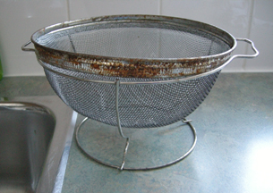

Module 3—Electrochemical Reactions
Lesson 2—Predicting Redox Reactions
 Get Focused
Get Focused

Rust on a household strainer. Was the selection of iron a good choice of metal for the strainer considering the intended use for this object?
Each metal differs in its ability to react. For example, when exposed to air, pennies (primarily made of copper) tend to lose their luster. Silver coins and jewelry tend to tarnish and turn black. Gold, however, does not appear to lose its luster when exposed to air.
In Lesson 1 you learned that the loss of luster in some metals is due to an electrochemical reaction in which the metals are oxidized and exchange electrons with another reactant. Knowledge of which metals have the greatest potential to oxidize, and in what conditions their oxidation is rooted, could be a great asset when considering materials for use in construction or other applications.
Consider the following questions as you complete Lesson 2:
- Why do some metals appear to react more easily than other metals?
- Is it possible to predict whether an electrochemical reaction will occur spontaneously?
The focus of Lesson 2 is on learning how to interpret reaction data that you will collect. You will also learn to construct tables that will help you make predictions about the reactivity of metals or metal ions with other substances.
Being able to interpret reaction data in the manner you will learn in this lesson is essential to your study in the rest of this unit—be extra careful as you complete questions and work through problems in this lesson, and ensure you have mastered this skill before moving on to the next lesson.
 Module 3: Lesson 2 Assignment
Module 3: Lesson 2 Assignment
Download a copy of the Module 3: Lesson 2 Assignment to your computer now. You will receive further instructions on how to complete this assignment later in the lesson. The assignment has the following parts:
- Part 1: Lab—Spontaneity of Redox Reactions
- Part 2: Lab Exercise 13.A on page 572 of the textbook
You must decide what to do with the questions that are not marked by the teacher.
Remember that these questions provide you with the practice and feedback that you need to successfully complete this course. You should respond to all the questions and place those answers in your course folder.